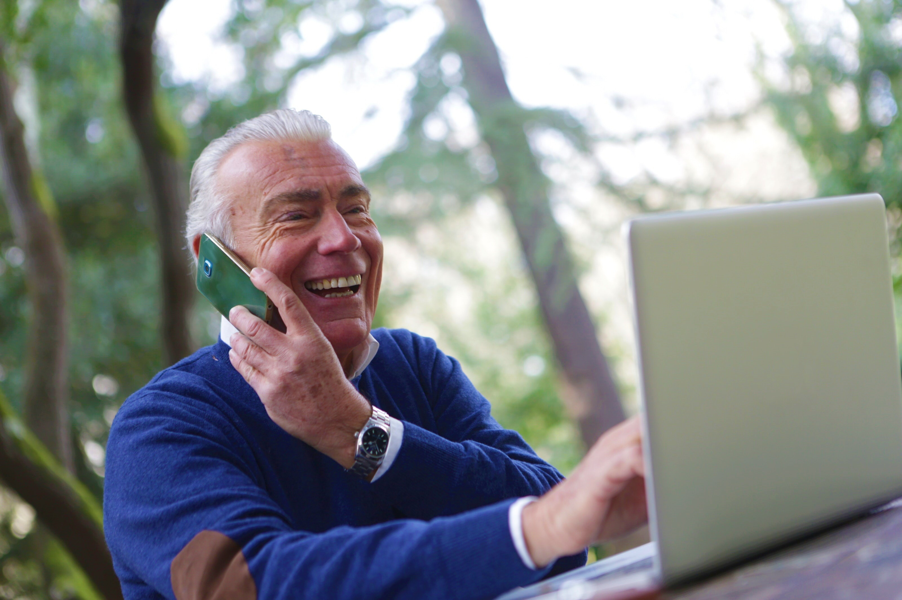

Saucy Onigiri - Stay Connected
Description of Project
What is our project?
The main premise behind the Stay Connected project is the creation of an accessibility focused website
that will cater to the older and less technologically experienced portion of the community, that are
lacking social connection with family and friends in their daily lives. What the project aims to do is
provide a hub which the targeted audience can learn how to use technology to communicate and operate
their devices, in particular, areas such as using social media applications, creating and sending
emails, and navigating/operating their own device.
The website plans to include step by step tutorials on how to use features of the main communication
apps for the aforementioned demographic. This will be easy for users to easily follow along with their
own device and will include features such as speed control settings, volume control, full-screen mode,
captions in a variety of languages, forward/reverse skip and also assistant with these features. We aim
to make the interface of the website as simple as possible to ensure our users are comfortable and can
easily navigate the website with as little prior skill required. We are also developing 'guide print
out' (printable instructions) on how to use some tech features for those that like to learn from paper.
This is also a goal of ours as we are aware that some users may prefer physical instructions to fully
understand the content. These guides will include step by step instructions and are available in
multiple languages to aid users of the older demographic that personally prefer reading and following
instructions in physical form.
The website will also have interactive media that allows the user to be 'tested' with the knowledge they
have just learned from a video and implement skills they have learned from the tutorials. This helps to
reinforce the knowledge they have just learned and apply those skills. A quiz will also be available for
users when they first use the website to understand their level of technological capability and
recommend tutorials that best suit them.
A live chat box feature is also a potential goal of ours as it can help users with any issues or
questions they have immediately. It can also help to gather data on what issues or queries are the most
recurring so that we can take measures to constantly improve. A text to speech and speech to text
feature is also planned to be developed as it will ensure senior users will not strain their vision and
can easily access the information. It is aimed to be implemented to the live bot. The priority features
include the tutorials and the printable instructions as they are the main features of the site and
contain the bulk of information for the users. A limitation may be that the 'quiz' cannot be developed
in time as it requires time and skill to develop. We plan to replace that feature with pictures or
screenshots of the app or program features we are demonstrating as a summary that is easy to refer to
should we run out of time.
Our Motivation
Our website will be very useful and we feel it is a very important tool given the current environment in
terms of communication. The world is in crisis and now more than ever we need to rely on the trend of
technology to communicate. There are millions of people that have not been able to keep up with the rest
of the world in regard to technological advances, even though they were surrounded by it with friends
and family. Now with social distancing and everyone being instructed to stay at home there will be many
that cannot get their help from those they know and the only help is with the use of technical
functions, hence they won't actually have any assistance at all. We as a society have left people
behind, and now for some, it is too late as they now are in full isolation and unable to have people to
communicate with face to face. If only we had encouraged and even pushed people to all be connected.
This is why we feel motivated to have a website that can easily illustrate how to use their devices to
communicate and keep them socially connected while in times like now. This demonstrates our
understanding of the current situation and that we want to make a difference to help people to connect
with others virtually. We are motivated because we want the older generation to get familiar and be
comfortable with using the technology that we use in our daily life.
This project has inspired us to help those who are alone during our current worldwide pandemic and are
unable to communicate with their friends and family. This also relates to the fact that the majority of
us (Jessani, Dylan, Anisah, Yumi and Jade) have an interest in web development and feel that we will be
able to successfully bring this prototype to life. We all know someone who needs this website and that
is another reason why we feel that it will help people and why we are interested in this project.
Our Stay Connected progress
CLICK HERE to go to our Stay Connected website